VA Data Commons¶
The VA Data Commons supports the research and analysis of US military Veteran medical and genomic data and aims to accelerate scientific discovery and development of therapies, diagnostic tests, and other technologies for improving the lives of Veterans and beyond. The data commons features GWAS analyses on harmonized data.
Table of Contents¶
Getting Started¶
Login Page¶
Users will log in with their VA PIV credentials. Start by visiting the login page and sign in with your organizational account. After successfully logging in, your username will appear in the upper right-hand corner of the page. Click this link for more information about using the PIV login.
Once logged in, the user will see there are several options in the upper right hand corner of the home screen. In the blue bar at the top of the page, there is a link to VA Data Commons Documentation (the page you are currently reading), Email Support, your username and a log out button. Below these options, there are tabs for the Workspace, the Apps, and the Profile pages. Clicking on the VA Data Commons logo in the upper left hand corner of the screen will always return you to the home page of the data commons.
VA Data Commons Documentation¶
The button for VA Data Commons Documentation takes you to this page.
Email Support¶
If you need help, the Email Support button allows you to send a message to our help desk at support@datacommons.io. You may expect a response within 2 business days.
Data Access and Analysis¶
Workspace¶
Currently, workspaces are not available, and therefore you may see an error when attempting to log into this page. Generally, workspaces are secure data analysis environments in the cloud that can access data from one or more data resources. Workspaces may include Jupyter notebooks and JupyterLab, Python and RStudio. For more information about the Gen3 Workspace, you may refer to Gen3 Workspaces and Data Analysis in a Gen3 Data Commons.
Apps¶
The Apps page displays the option of three Apps: OHDSI Atlas, Gen3 GWAS and GWAS Results. Using these Apps, a user may perform a genomic analysis on available data from projects that they have access to.
OHDSI Atlas¶
ATLAS is an open source software application developed as a part of OHDSI community intended to provide a unified interface to patient level data and analytics. Atlas software used to define cohorts, typically dichotomous variables, for analysis.
ATLAS currently includes functionality for searching and navigating the vocabulary within the OMOP Common Data Model (CDM). In addition to the search and navigation capabilities, it also provides features to curate and export custom sets of concept identifiers for use in cohort definitions. These will automatically populate on the Gen3 GWAS App. In general, ATLAS is an analytics platform that can be used to perform analyses across one or more observational databases which have been standardized to the OMOP Common Data Model V5 and can facilitate exchange of analysis designs with any other organizations across the OHDSI community.
Tutorials for the ATLAS tool can be found here and the book about the OHDSI can be found here. These resources contain a lot of useful information, particularly you might find it useful to read about Cohort Definition. It is highly advisable that you familiarize yourself with these resources before proceeding. We have also provided a brief step-by-step guide to creating dichotomous variables here:
Steps to Generate a Cohort¶
Step 1 Create a Concept Set
Concept Sets are a list of codes created by searching the standardized vocabulary and selecting the set of terms for your analyses. Here you select all concepts (variables) that you would like to use for criteria that define your study population cohort.
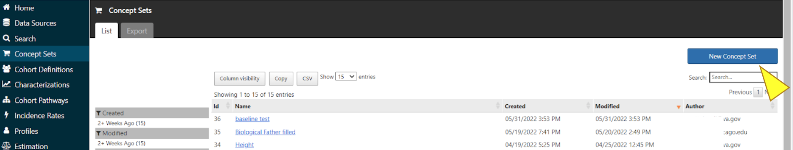Select Concept Sets in the menu and click the blue box for “New Concept Set”.
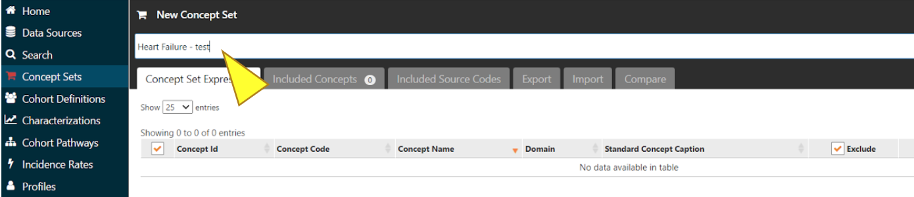In the box above the tabs, enter a name for the Concept Set you are creating.
Click the green box “Add concepts” to view the list of concept variables.
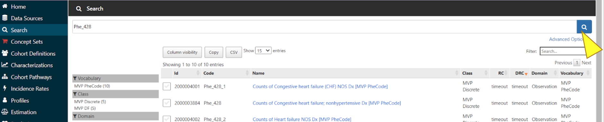Enter the concept name or code into the search bar to find relevant concept variables.
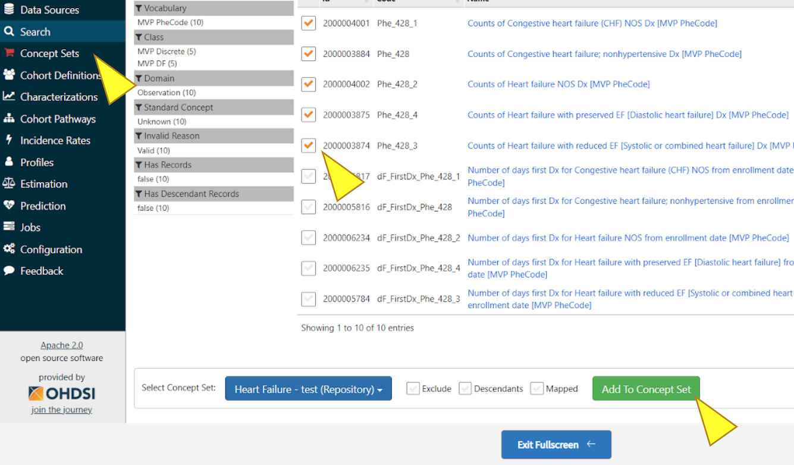Select desired concepts, click “Add To Concept Set”. Repeat Search and Add steps as needed, then click “Concept Sets”.
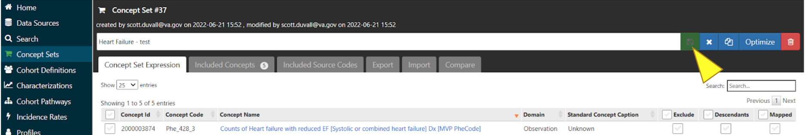Make sure all desired concepts are included, then click the save icon to the right of the name of the Concept Set.
To add new concepts, please use the “Add Concepts” button again as described above.
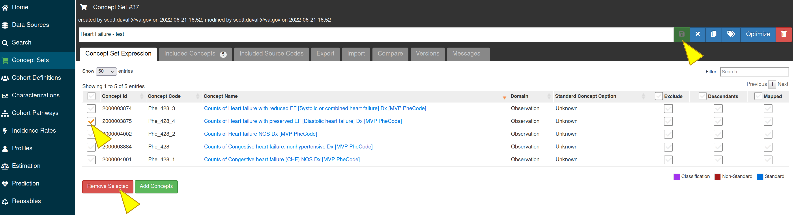To delete the concepts from the concept set, select the concepts and click on the “Remove Selected” button, then click the save icon to save your changes.
Step 2 Create Cohort Definition
A cohort is a set of persons who satisfy one or more inclusion criteria for a duration of time.
Use the concept sets to create initial events and other criteria for defining the study population cohort. A cohort is defined as a Person with an entry and exit date. Thus, a person can be in a cohort multiple times if they meet the criteria.
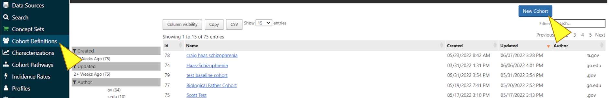Select “Cohort Definitions” in the menu, you can begin to create a cohort by clicking the “New Cohort” button.
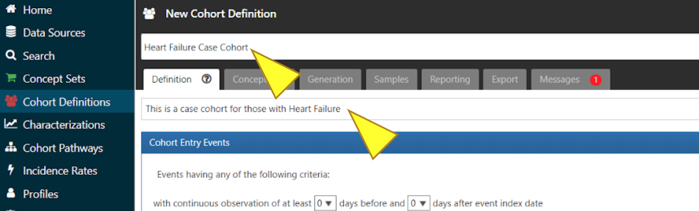In the boxes above and below the tabs, enter a name and description for the Cohort.
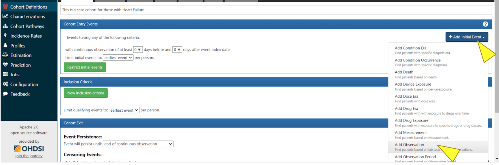To establish the duration for your cohort, click “+ Add Initial Event”, then in the dropdown menu click “Add Observation”.
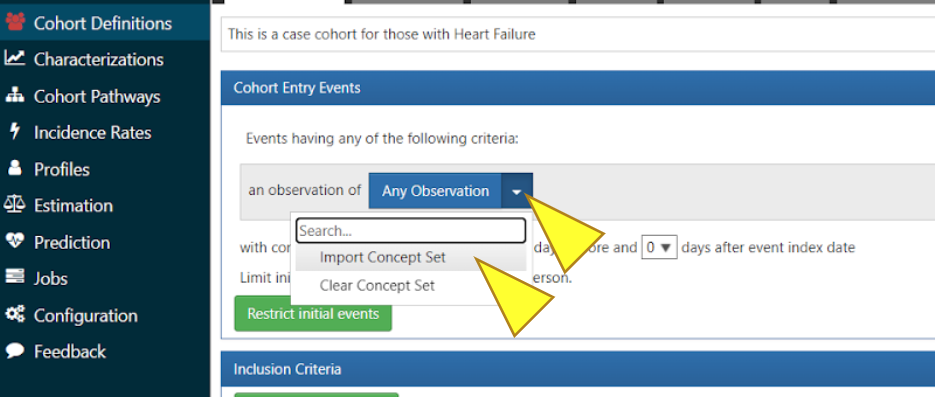Click the blue box “Any Observation”, select “Import Concept Set” from the dropdown menu.
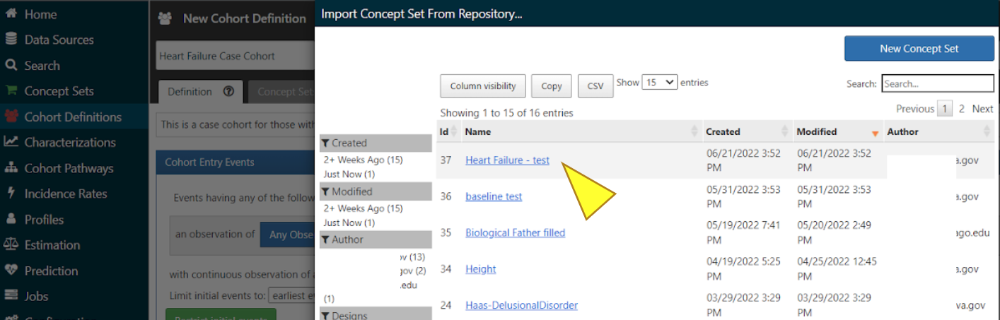Select the Concept Set you just made. This establishes your Concept Set as inclusion criteria for your cohort.
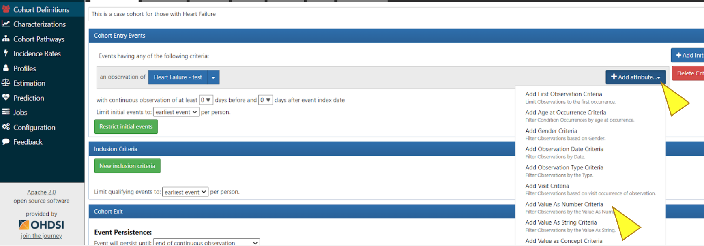To access the table in the MVP harmonization database, click “+ Add attribute…”, then click “Add Value as Number Criteria”.
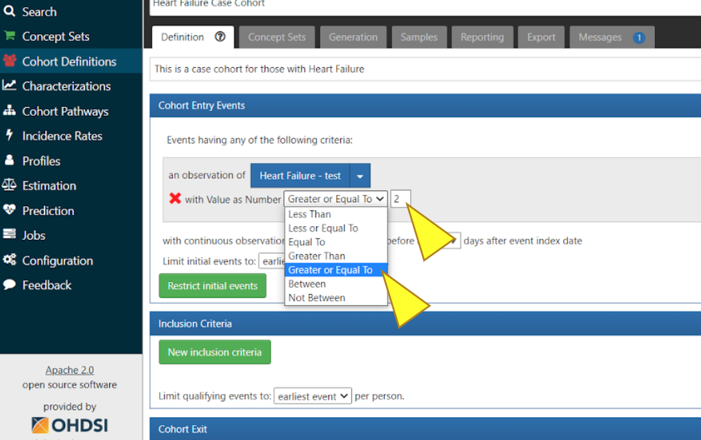Select “Greater or Equal To”. In this specific case we added Heart Failure concept Set and entered value “2”. This will allow for the collection of data from the Observation table of the MVP harmonization database.
If you would like to add additional inclusion criteria, click “New inclusion criteria” select criteria or import another configuration. To complete the Cohort Definition, click the green Save icon.
Step 3 Generate Cohort
Once created, the cohort can then serve as the basis of inputs for your subsequent analyses. Use the cohort definition to identify how many people are in the cohort. This is the initial number that will be used in the GWAS App when this cohort is selected.

To complete the creation of the Cohort Definition, click “Generation”, then “Generate”.
Cohort size will be displayed under the column “People”. Use View Reports to see if you have inclusion criteria that causes cohort attrition.
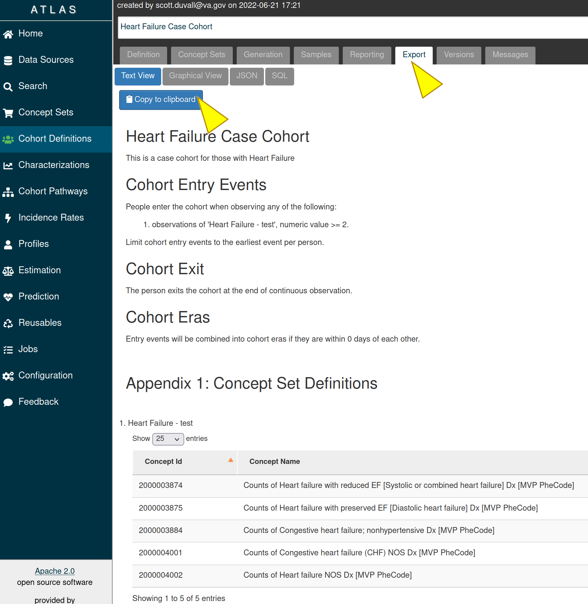The “Export” tab provides a text version of how a cohort was created. Click on the “Export” tab and then on the “Copy to clipboard” to copy the cohort’s information.
We expect that this documentation in addition to the OHDSI tutorials are sufficient for most analyses that users will attempt. If you have any questions, please contact us at support@datacommons.io.
Gen3 GWAS¶
Use this App to perform a high throughput Genome-wide association studies (GWAS) on MVP data using the University of Washington Genesis pipeline. For more information about the Genesis pipeline please refer to the publication “Genetic association testing using the GENESIS R/Bioconductor package”.
GWAS help scientists identify genes associated with a particular disease (or another trait). This method studies the entire set of DNA (the genome) of a large group of people, searching for small variations, called single nucleotide polymorphisms or SNPs (pronounced “snips”).
We offer two types of GWAS analysis-
Genome-wide association studies (GWAS) for Quantitative phenotype
Genome-wide association studies (GWAS) for a Case-Control study
Each of these Gen3 GWAS options are available through the GWAS App, and consists of several steps. To navigate between the steps, click the Next or Previous box in the lower corners of the screen.
Each step displays the Attrition table at the top of the page. The Attrition table contains information about the total population size and sample size by ancestry for your selected cohorts and variables.
For more information about the web functionality of each step, please refer to the Tutorial button. This tool will offer highlighted explanations on different parts of the page.
When entering the App, a user must first select the type of GWAS from the choices in the box on the screen.
Genome-Wide Association Studies (GWAS) for Quantitative Phenotype¶
Here, GWAS evaluates the statistical association between genetic variation and a continuous phenotype. A phenotype, also called a trait, can be any measured or observed property of an individual.
- Tip
On each step of the workflow there is a tutorial, please click
the icon to navigate through the tutorial
Step 1 Select a cohort for GWAS
In this step, you will determine the study population. To begin, select the cohort that you would like to define your study population with. You may only see cohorts that you have access to. Please select only one cohort. The size of the cohort population is indicated in the right hand side of the table. To browse the table please scroll down to the bottom.
You may also see a button to create a new cohort. This button will open a new tab in your browser, outside of the Gen3 GWAS App and send you to the OHDSI Atlas App.
Step 2 Select harmonized variables for phenotypes and covariates
In this step, you will select the harmonized variables for your study. GWAS App provides over 5,000 variables for your selection, for example, height, weight, blood pressure, white blood cell, and other clinical observations. Please select all variables you wish to use in your model, including both covariates and phenotype. (Note:- population PCs are not included in this step)
You may choose as many variables as you wish in this step, with a minimum of one, that will represent your outcome phenotype. You may remove them later in the pipeline. Currently, only continuous variables can be selected. To browse the table, please scroll down to the bottom. To search the table please enter free text in the search box to search by cohort name.
Step 3 Select which variable is your phenotype
In this step, you will determine your phenotype, using the selected variables from step 2. Please choose one of the selected variables to be the study’s phenotype.
Here you may choose your phenotype. All data are harmonized from different projects through the collaborative development of a data dictionary. In the right hand side of the table a missing % is calculated. This is to reflect how many subjects of the chosen population do not have this information available. To browse the table please scroll down to the bottom.To search the table please enter free text in the search box to search by cohort name.
Step 4 Add custom dichotomous covariates
In this step, you may add custom dichotomous covariates by selecting two cohorts. This step is optional, and you may choose not to add any dichotomous covariate at all. You may combine a cohort for YES and a cohort for NO. Once cohorts are selected you may enter a name for the covariate. To commit the changes please press ‘Add’ at the bottom (You must ‘Add’ the variable before moving to the next screen if you want it to be a part of your analysis). You may repeat this action as many times as you need, or choose to not add any custom dichotomous covariates at all. Please note that all given names must be unique.
As you add covariates you may see them populate on the right hand side of the screen as cards. The card contains your given name at the top of the card, and the ability to remove the created covariate at the bottom of the card.
Step 5 Set workflow parameters and remove unwanted covariates
In this step, you will determine workflow parameters. Please adjust the number of population principal components (PCs) to control for population structure, minor allele frequency cutoff and imputation score cutoff. You may also remove unwanted covariates. Please also choose one ancestry population on which you would like to perform your study.
Number of PCs- Population Principal components (PCs) refer to linear combinations of genome-wide genotyping data to control for population structure/stratification (select up to 10 PCs)
Covariates- Please review the chosen covariates. You may remove unwanted covariates, or go back (at the bottom of the page) to step 2 to choose different ones.
Dichotomous Covariates- Please review the created covariates. You may remove unwanted covariates, or go back (at the bottom of the page) to step 4 to adjust/add different ones.
Phenotype- Please see here the phenotype chosen in step 3. To adjust please go back (at the bottom of the page) to step 3 to choose a different one.
Harmonized Ancestry and Race/Ethnicity (HARE) dropdown menu- Please choose the ancestry population on which you would like to perform your study. The numbers appearing in the dropdown represent the population size of your study, considering all of your previous selections.
MAF Cutoff- Minor allele frequency (MAF) is the frequency at which the second most common allele occurs in a given population and can be used to filter out rare markers (scale of 0-0.5)
Imputation Score Cutoff- This value reflects the quality of imputed SNPs and can be used to remove low-quality imputed markers (scale of 0-1)
Step 6 Submit GWAS Study
In this step, you may review the metadata selected for the study, give a name to the study, and submit the GWAS for analysis. To commit any changes please go back to the relevant step.
Check Submission Status and Review Results
Once your GWAS analysis is submitted, you can check the submission status and review the results in the “GWAS Results” App.
Genome-wide association studies (GWAS) for a Case-Control study¶
Here, the genotypes of a roughly equal number of diseased (“cases”) and healthy (“controls”) people are compared to determine which genetic variants are associated with the disease. Cases are encoded as ‘1’ while controls are encoded as ‘0’ and a binary model is used.
- Tip
On each step of the workflow there is a tutorial, please click
the icon to navigate through the tutorial
Step 1 Select a case cohort for GWAS
In this step, you will begin to define the study population. To begin, select the cohort that you would like to define as your study “cases” population. You may only see cohorts that you have access to. Please select only one cohort. The size of the cohort population is indicated in the right hand side of the table. To browse the table please scroll down to the bottom.
You may also see a button to create a new cohort. This button will open a new tab in your browser, outside of the Gen3 GWAS App and send you to the OHDSI Atlas App.
Step 2 Select a control cohort for GWAS
In this step, you will continue to define the study population. Please select the cohort that you would like to define as your study “control” population. You may only see cohorts that you have access to. Please select only one cohort. The size of the cohort population is indicated in the right hand side of the table. To browse the table please scroll down to the bottom. To search the table please enter free text in the search box to search by cohort name. To search the table please enter free text in the search box to search by cohort name.
You may also see a button to create a new cohort. This button will open a new tab in your browser, outside of the Gen3 GWAS App and send you to OHDSI Atlas App.
Step 3 Select harmonized variables for covariates
In this step, you may select covariates for your study. GWAS App provides over 5,000 variables for your selection, for example, height, weight, blood pressure, white blood cell, and other clinical observations. This step is optional, and you may choose not to add any covariate at all. Please choose as many covariates as you wish, you may remove them later in the pipeline. Currently, only continuous covariates are presented. All variables are harmonized. To browse the table please scroll down to the bottom. To search the table please enter free text in the search box to search by cohort name.
Step 4 Assess % missing in selected covariates
In this step, you can review the covariates selection based on % missing metrics. To adjust covariates please return to Step 3. If no covariates were chosen in step 3, this step will be empty.
Step 5 Add custom dichotomous covariates
In this step, you may add custom dichotomous covariates by selecting two cohorts. This step is optional, and you may choose not to add any dichotomous covariate at all. You may combine a cohort for YES and a cohort for NO. Once cohorts are selected you may enter a name for the covariate. To commit the changes please press ‘Add’ at the bottom (You must ‘Add’ the variable before moving to the next screen if you want it to be a part of your analysis). You may repeat this action as many times as you need, or choose to not add any custom dichotomous covariates at all. Please note that all given names must be unique.
As you add covariates you may see them populate on the right hand side of the screen as cards. The card contains your given name at the top of the card and the ability to remove the created covariate at the bottom of the card.
Step 6 Set workflow parameters and remove unwanted covariates
In this step, you will determine workflow parameters. Please adjust the number of population principal components to control for population structure, minor allele frequency cutoff and imputation score cutoff. You may also remove unwanted covariates. Please also choose the ancestry population on which you would like to perform your study.
Number of PCs- Population Principal components (PCs) refer to linear combinations of genome-wide genotyping data to control for population structure/stratification (select up to 10 PCs)
Covariates- Please review the chosen covariates. You may remove unwanted covariates, or go back (at the bottom of the page) to step 2 to choose different ones.
Dichotomous Covariates- Please review the created covariates. You may remove unwanted covariates, or go back (at the bottom of the page) to step 4 to adjust/add different ones.
Harmonized Ancestry and Race/Ethnicity (HARE) dropdown menu- Please choose the ancestry population on which you would like to perform your study. The numbers appearing in the dropdown represent the population size of your study, considering all of your previous selections. HARE dropdowns-
MAF Cutoff- Minor allele frequency (MAF) is the frequency at which the second most common allele occurs in a given population and can be used to filter out rare markers (scale of 0-0.5)
Imputation Score Cutoff- This value reflects the quality of imputed SNPs and can be used to remove low-quality imputed markers (scale of 0-1)
Step 7 Submit GWAS Study
In this step, you may review the metadata selected for the study, give a name to the study, and submit the GWAS for analysis.
Check Submission Status and Review Results
Once your GWAS analysis is submitted, you can check the Submission Status and Review the Results in the “GWAS Results” App.
GWAS Results¶
Use this App to view the status & results of submitted workflows. Click the arrow in the Submitted Job Statuses box to activate the drop down menu and see the status of your analysis. This menu will display a history of your submitted jobs including the Run ID of your analysis, the start time, and the finish time when the run is completed. The menu will also show the status of your analysis:
Pending - your analysis was placed in the queue to run, depending on the length of the queue your analysis could start in the range of several minutes to several hours
In Progress - your analysis is started and running, depending on your selection of cohort and variables it could finish in the range of half an hour to three hours
Failed - your analysis returned the error, it is advised to review/change your GWAS parameters or contact our help desk at support@datacommons.io
Completed - your analysis was successfully completed and you may download the results of the GWAS analysis from this menu
Once completed, you may download the results of the GWAS analysis from this menu. By pressing the ‘Download’ link a tar.gz file will start downloading to your computer. Depending on your cohort and variables selection, the file size can vary in the range of 700MB up to 1.3GB. The file contains the following: Manhattan plot, QQ plot, metadata file containing all of your selections, your study’s attrition table, and per-chromosome GWAS summary statistics.
Frequently Asked Questions¶
Where can I find more documentation on the OHDSI Atlas app?¶
ATLAS was developed and is maintained by the OHDSI community. Tutorials for the ATLAS tool can be found here and the book about the OHDSI can be found here. These resources contain a lot of useful information, particularly you might find it useful to read about Cohort Definition. If you need help, please reach out to our help desk at support@datacommons.io
What are harmonized variables?¶
Data harmonization is the process of defining terms across different but similar projects. It helps to avoid inconsistencies in data reporting and makes it easier to find and analyze data. For example, different studies can have their unique names for the variable “date a participant enrolled”, like “index date”, “date of enrollment”, or “AnchorDate”. Those variables are harmonized, or mapped, to a single harmonized variable “enrollment date”.
What will be included in the downloadable package at the end of a GWAS?¶
The package contains the following: Manhattan plot, QQ plot, metadata file containing all of your selections, your study’s attrition table, and per-chromosome GWAS summary statistics.
How long will my GWAS take?¶
You may check the status of your analysis in the “GWAS Results” App. After you submit your analysis, it will be placed in the queue to run. The “GWAS Results” App will show the “Pending” status for your submitted analysis. Depending on the length of the queue, your analysis could start in the range of several minutes to several hours. After the analysis starts to run, the status will be changed to “In Progress”. Depending on your selection of cohort and variables, it could finish in the range of half an hour to three hours. You may close your browser after you submit the analysis.
Why does the workspaces page give me an error?¶
Currently, workspaces are not available, and therefore you may see an error when attempting to log into this page. Generally, workspaces are secure data analysis environments in the cloud that can access data from one or more data resources. Workspaces may include Jupyter notebooks and JupyterLab, Python and RStudio. For more information about the Gen3 Workspace, you may refer to Gen3 Workspaces and Data Analysis in a Gen3 Data Commons.